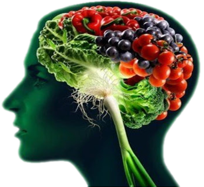

Richard Höchenberger
Cognitive Neuroscientist
DAAD RISE Research Internship:
Perception and Evaluation of Taste Mixtures
Quick facts
- What's this This is an offer for an internship position through the RISE program of the German Academic Exchange Service (DAAD).
- Who's eligible Master's students in their 2nd year (or later), who are currently enrolled in the US, Canada, or the UK. See here for more details.
- Application deadline Jan 15, 2017.
- First day of the internship March 15, 2017.
- Duration 3 months.
- Scholarship The DAAD will provide you with a montly allowance of € 650.
- Where to apply Directly at the DAAD RISE website.
- Reference code PotsdamRehbruecke_BI_2518
- Download this internship offer as PDF.
Background
 Taste is a principal component of the perception of food and food‐related stimuli. It helps us evaluate the edibility of a foodstuff (e.g., a bitter taste could indicate toxicity), and allows us to judge its nutritional value (e.g., sweet taste indicating carbohydrates). Taste perception is also tightly coupled with other mental concepts, such as hedonics (liking) and disgust, and clearly serves an evolutionary purpose. It therefore plays an integral role in the research of eating‐related disorders like binge eating, and is a potential key to a better understanding of the causes of obesity. However, the mechanisms of taste perception in humans are not well understood: Controlled taste stimulation in a laboratory environment is difficult, and only a very small number of research groups focus on taste for that reason. Furthermore, investigations mostly employ “pure” tastes only, while in real‐life situations, we usually encounter more or less complex mixtures of different tastes. We are one of the few research groups worldwide with the proficiency and equipment to conduct and analyze experiments employing pure tastes and taste mixtures to gain a better understanding of how, where, and when taste is being processed in the human brain. We use sophisticated computer‐controlled stimulation apparatuses and record brain activity via electroencephalography (EEG).
{kind=link}
Your project
 You will design, implement, conduct, and analyze
a study on the perception and neural processing of taste
mixtures in humans. You will learn how to come up with an
experimental design; how to implement it in the lab, taking
advantage of the equipment we provide; how to record data;
and how to analyze these datasets. You can chose between two
tracks: focusing your study on either psychophysical (adaptive
thresholds) or EEG measures. You will be thoroughly guided
through each of these steps to ensure your project will be a
success.
You will design, implement, conduct, and analyze
a study on the perception and neural processing of taste
mixtures in humans. You will learn how to come up with an
experimental design; how to implement it in the lab, taking
advantage of the equipment we provide; how to record data;
and how to analyze these datasets. You can chose between two
tracks: focusing your study on either psychophysical (adaptive
thresholds) or EEG measures. You will be thoroughly guided
through each of these steps to ensure your project will be a
success.
Your opportunity
This project is a great fit if you are interested in cognitive neuroscience in general, and taste perception in particular. You should be eager to learn and apply new techniques that are required to conduct experiments in our lab. This includes programming (Python), acquiring a basic understanding of computer‐controlled stimulus delivery and how the involved apparatuses function and interact, as well as conducting basic statistical data analyses. This project will take three months to complete.
Psychophysiology of Food Perception Group
The group investigates the psychophysiological foundations of taste perception and the interaction of taste with other senses relevant to food perception and hedonic valuation (palatability) of food in humans. We offer a stimulating and collaborative research environment and excellent working conditions. The lab hosts a high‐density EEG system and state‐of‐the art taste stimulation systems suitable for EEG and behavioral studies. The institute is located in the metropolitan area of Berlin/Potsdam and allows access to a multitude of seminars, lectures and stimulating meetings at the surrounding institutes, e.g. Charité, Humboldt‐University, University of Potsdam, Technical University Berlin, etc.
Who's in charge?
- Supervision Richard Hoechenberger | hoechenberger@dife.de
- Host Institution German Institute of Human Nutrition Potsdam‐Rehbruecke, Nuthetal
- Research Group Psychophysiology of Food Perception
- Head of Group Dr. Kathrin Ohla (habil.), Chair of Experimental Psychology at Medical School Berlin
Peer-reviewed science
For a related publication, see: Crouzet, Busch & Ohla (2015). Taste quality decoding parallels taste sensations. Current Biology, 7:890‐896.
How to apply
Please submit your application directly through the RISE application portal. This project has the reference code
PotsdamRehbruecke_BI_2518Simply type that into the search form. You need to register and log in first.
Looking forward to receiving your application!